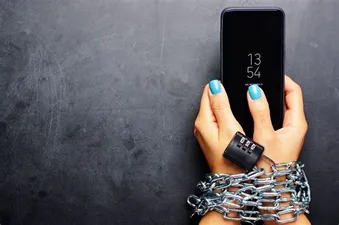

| Photo Addiction Image |
Website Name |
Author |
What the websites say |
|  |
Life Hack |
Tova Payne |
An addiction is when the thing you are addicted to begins to control your life and interferes with your daily activities, work, and relationships. The classical definition of an alcoholic is someone who wakes up to a glass of vodka instead of a cup of coffee. But with the boom of technology, the signs of addiction can also be found in other places besides...................... |
|
Daily Mail |
Paul kendall |
The addiction of children to their mobile phones could threaten the very fabric of society, a study suggests.
Many teenagers are fanatical about being always available and are extremely uneasy if unable to contact their friends countless times each day.
If the trend continues, young people will soon be incapable of forming and maintaining relationships without the help of a mobile, the study by.............. |
|
Psychguides |
Unkwnown |
Although cell phones allow individuals to have unlimited access to information and to connect with others in a way otherwise thought impossible, there are many harmful and disturbing effects of smartphone dependence. Cell phone addiction, sometimes referred to as problematic mobile phone use, is a behavioral........... |
|
|
Bmcresnotes |
Abas Aghei |
In this descriptive-analytical study, 439 students entered the study by stratified random sampling. The study tool was the mobile phone addiction and SELSA’s sense of loneliness questionnaires. The average score of mobile phone addiction in boys and girls was 73.77 ± 11.48 and 74.64 ± 12.28 from 100, respectively. There was no significant difference between them. According to the rating of mobile phone addiction, 17.8% of the students were in the range of moderate dependency and 10.9% of ........................... |
 |
Health |
Sarah Karnasiewicz |
Are you reading these words on a phone? If the answer is yes, you're in good company. According to research published in 2017 by the media analytics company Comscore, the average American adult spent approximately 2 hours and 51 minutes on their smartphone every single day in 2016.
In other words, if you've ever questioned whether that twitchy feeling you get every time you........................... |